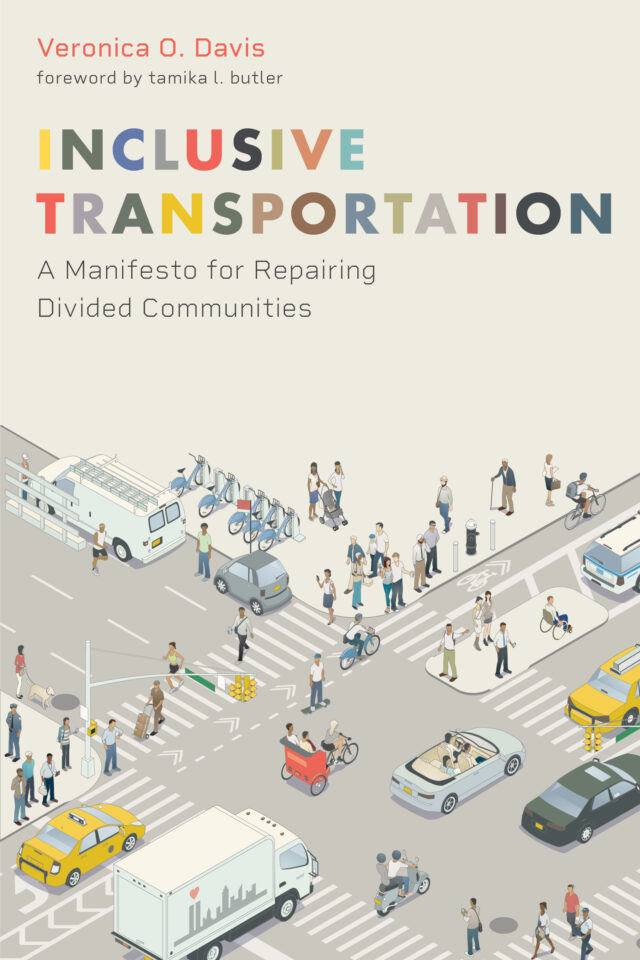

Tackling “Inclusive Transportation” with Veronica O. Davis
by Kiran Herbert, Communications Manager
December 8, 2023
In this interview, the urban planner discusses her new book and how to make shared micromobility more equitable.
Not once in Veronica O. Davis’ book, “Inclusive Transportation,” does the urban planner provide a definition of ‘equity.’ That’s not to say that she doesn’t engage on the topic — in fact, creating an equitable transportation system is one of the underlying themes of the whole book. Instead, she offers different definitions that have been used by others and leaves room for the reader to figure out what makes the most sense on a case-by-case basis.
“I was very intentional about not giving a definition because I didn’t want someone to take my definition and say, ‘Yes, I’ve done the equity,’” says Davis, who co-founded Black Women Bike and currently serves as the director of transportation and drainage operations at the City of Houston. “The definition of equity really changes depending on your community and what your goals are for any given project.”
Davis’ book is “a manifesto for repairing divided communities,” and it’s meant to help urban planners, engineers, transportation advocates, policymakers, and journalists disrupt the status quo. The goal is to rethink transportation and design communities around people, creating cities where past harms are accounted for and minorities don’t continue to bear the brunt of American autocentricity. Needless to say, there’s a lot of work to be done.
Like all facets of American transportation, the shared micromobility industry is ripe for reform. However, as we usher in a new era of transportation planning, it’s also uniquely positioned to be an integral part of the solution. We spoke with Davis about her book and how to apply its many lessons to shared micromobility.
BBSP: In a general sense, why is your book an important read for those working in shared micromobility?
Veronica O. Davis: I didn’t just write this book for planners and I believe it is very much relevant for those working in shared micromobility because inclusive transportation is about providing all types of options to people. Right now we’ve built a system where many people are dependent on motor vehicles, which are very expensive — even owning a bike can be expensive for people.
Shared micromobility gives people more options and can help people with first-mile/last-mile connections so that they can access public transit. Things like bike share give people a low-cost opportunity to move, so to me, they’re an extremely important part of an inclusive transportation network. This is especially true as we introduce more e-bikes and adaptive devices into our networks, which add another aspect of inclusivity.
While you never give your definition of equity, you do use the metaphor of an emergency room to show how we can prioritize historically underserved communities in transportation work. Can you share more about how that works?
In transportation, including in the shared micromobility space, we’re all limited by time, by people, and by money — with those limited resources, we can’t give everybody what they need. In this country, every city probably has millions and millions and millions, if not a billion dollars worth of infrastructure needs.
What that means is that we have to prioritize. I provided a framework of an emergency room where there is a decision framework that emergency rooms have — known as a triage process — that determines the order they’re going to see patients. And so if we all come in with a cold, we’ll be seen in the order we come in. But if someone comes in with a higher need, say a broken arm, they’re moved to the top of the list. Applied to transportation, it’s about having that type of priority framework that determines where are we going to put our time, effort, and energy in terms of investment.
As we think about micromobility, some cities have built their systems around tourism, which is fine. But at what point do you begin to build it around your communities with the most need to get them to where they need to go? And not just doing a desktop exercise to determine where the network is and how you build it up. We have to ask: Where are the people actually trying to go and how can we get them there?
Going into underserved communities and leading with bike share can often face pushback for a myriad of reasons. Maybe people want to talk about sidewalks or transit, things outside of the shared micromobility operator’s control. How can those working in shared micromobility move forward in that environment and succeed when it comes to community engagement?
I think Philadelphia really has a great model in how they built their bike share network. From the beginning, they had a lot of engagement and a lot of conversations with the community before they just started plopping down bikes. They created jobs for people in communities where the bike shares were to go. They’ve created a framework for how to do things in the right way and it’s a very adaptable model but not a lot of cities are following their example. It’s about building in equity from the foundation rather than trying to retrofit for it after you’ve already built the system.

Early on, you spotlight DC and Philadelphia as two municipalities that did engagement around their bike share systems with different results. Why do you think Philadelphia was more successful in serving diverse riders than DC?I think the difference is that DC took a database approach to equity. They looked at maps and used a GIS analysis to determine where to put the bike share based on things like demographics and where there were bike lanes. It was more of a mathematical assessment versus Philly, where it was more of a people assessment. They did a lot around focus groups, even down to the color of the bike and payment methods. There’s equity that’s people-focused and equity that’s data-focused — even if you’re using data, you can’t lose sight of the people.
There’s a section where you spotlight “capacity building,” or how we can provide resources for the community to continue to expand its work. What would this look like in shared micromobility?
I think some of it is job creation, so having people work as ambassadors to do the outreach but also people to maintain the equipment. I know it’s not a lot of jobs but it’s enough — and these are jobs with low barriers to entry, which can help create an employment pipeline in local communities.
I think that there are opportunities to partner with different community-based organizations around things like public health or adult bike education. I’m the co-founder of Black Woman Bike and we did a lot of learn-to-ride classes that got people on bicycles who hadn’t been on bicycles in decades, some who had never known how to ride.
It’s not enough to just drop bikes in a community and say good luck. It’s about empowering people to see them as community assets, use them, and move confidently.
You write that “transportation networks are a public good that should serve all equally — and we should be wary of for-profit companies being the knight in shining armor for transportation reform.” This strikes a cord when we think about SMM, which has typically been dominated by for-profit tech companies. What’s needed to change the dynamic?
The challenge with tech companies, even the ones in micromobility, is that they’re thinking primarily about the technology and oftentimes they don’t really understand the complexity — the chaos — of cities. For for-profit tech companies, it can be important to work with planners, engineers, and consultants to better understand cities. As for the cities themselves, I think it’s important that they fully determine the rules of engagement when it comes to the tech companies, helping to determine where they can be and how they do business.
You discuss the need for cities to set a vision and a framework to provide tech companies with guidelines for how to operate in your community. What would creating a better process look like?
The challenge of transportation is we’re always projecting from where we are today instead of having a bigger vision for what our cities can be. So we say: We have this many people today, this many jobs today, this is what our transportation looks like today, this is how it’s going to grow in the future, and here’s how we’re going to accommodate that growth.
But where do we actually want to be 20 years from now? What do we want the future of our cities to look like? As an example, what if we had a vision that 20 years from now we would reduce 50% of the pavement? What if we had a vision to reduce every surface parking lot?
If that’s your vision, then you need to work back from that and figure out how to get there. We’re going to need to increase public transit so that you can move more people in less amount of space. This is where things like shared micromobility become important — to achieve a more equitable transportation future, we’re going to need more bikes or scooters and things of that nature available to people.
Do you see that also working on the operator side? For example, if a system decided it wanted future ridership to be representative of those without access to a personal vehicle.
Absolutely. What if my mobility company said: My goal is to get 50% of the people who do not have cars or a bike. How do we get that? That might mean we have to have different types of bikes available to people or more e-bikes. That might mean dedicated community engagement and different pricing plans. Also, what type of policies do we need to get there? For example, in lieu of a stipend for parking, giving people the ability to cash out and use the funds for bike share. We just need to start thinking bigger than the status quo.
Is there anything you’d like to leave us with?
For the people working in the shared micromobility space, I would highlight chapter four, which encourages the reader to start thinking about transportation’s different stakeholders and particularly the silently suffering. These are the people who are living with the consequences of bad transportation planning decisions but don’t necessarily show up to meetings or have a voice in what gets done. As we build out and expand our systems, we need to center this group so that they’re able to move, gain independence, and have a reliable source of transportation.
The other key chapter is chapter six, which focuses on the advocacy side of things. Regardless of whether you’re affiliated with the city, a nonprofit, or the private sector — what is it you’re doing to advocate for better infrastructure to facilitate the ability for all users to safely use shared micromobility systems?
The Better Bike Share Partnership is funded by The JPB Foundation as a collaboration between the City of Philadelphia, the National Association of City Transportation Officials (NACTO), and the PeopleForBikes Foundation to build equitable and replicable bike share systems. Follow us on LinkedIn, Facebook, Twitter, and Instagram, or sign up for our weekly newsletter.